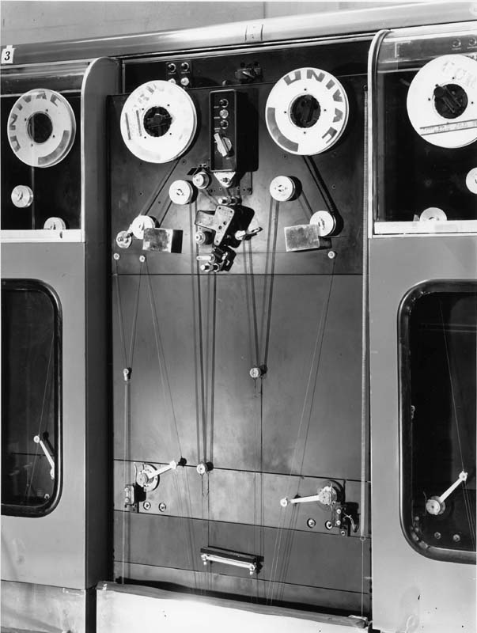

Magnetic Tape Memory

Magnetic Tape and the UNIVAC I (1952)
Replaced punch cards as principal storage medium for large data files
Batch processing techniques much faster with magnetic tape
Allows for inexpensive mass storage of information
Processing:
Inputs grouped together in a collection called a "batch"
Sorted in sequence of the files of data and processed job-by-job until the entire batch completed
UNIVAC (1952) --> introduces UNISERVO tape drive for the UNIVAC I
It was the first tape storage device for a commercial computer --> was very popular
Low cost
portability
Unlimited offline capacity of magnetic tape
Specs:
Tapes were .5" wide
0.0015" thick
1,500' long
Made of phosphor-bronze with a metallic coating
A reel could hold 1,440,000 decimal digits
Read at 100 inches/sec.
Key part of the computer revolution
Audio recording is still done on magnetic tapes
View entire .PDF
About the Project
For STS-340: Finding Order in Nature.
Nodejs
application hosted by
Heroku
.
Copyright © JohnBurnsProductions